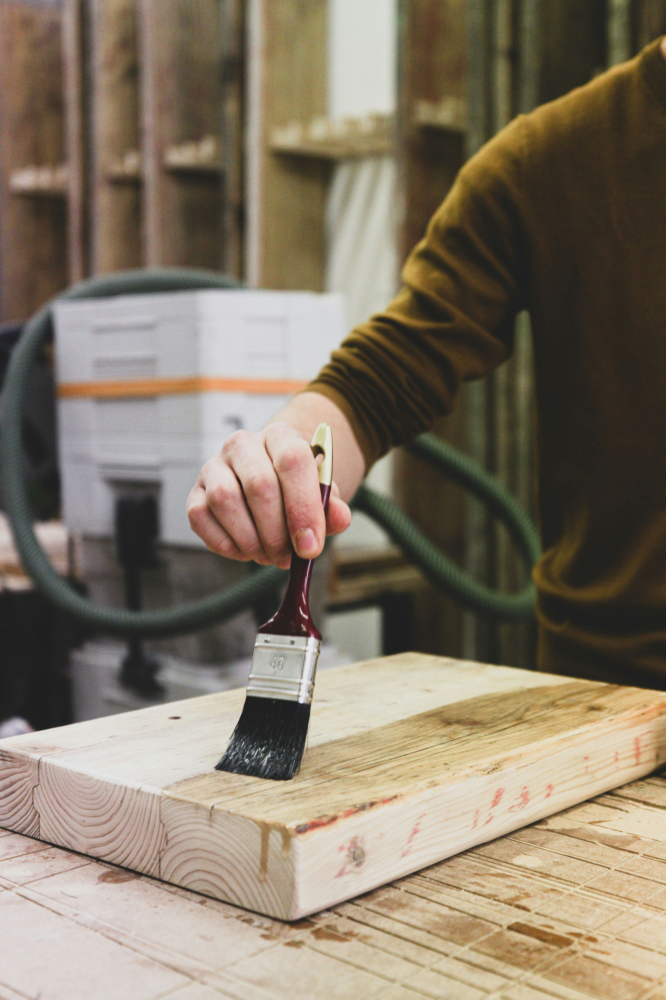

Window Restoration
We specialize in preserving original windows using period-appropriate techniques. Our services include:
- Glass pane repair and replacement
- Sash cord and weight systems
- Weather stripping and glazing
- Storm window integration

Woodwork Replication
Our master carpenters recreate missing or damaged wood elements with precision:
- Molding and trim reproduction
- Staircase and balustrade repair
- Door and cabinet restoration
- Custom millwork fabrication

Lead Paint Removal
Safe and thorough hazardous material abatement services:
- EPA-certified removal processes
- Containment and disposal
- Surface preparation for repainting
- Historic paint analysis